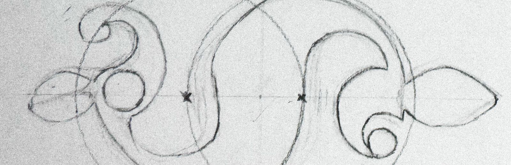

Research Week
Unit 1, Week 2

Research
I was randomly assigned Room 49 of the British Museum—the Weston Gallery of Roman Britain. I knew nothing about Roman Britain beforehand (I was raised and educated in Canada) so before my visit I found a couple of podcasts and YouTube videos to watch and listen to on public transit and at the gym.
First, a brief timeline of Roman Britain.
Timeline
-
55 & 54 BC
Julius Caesar leads two military expeditions to Britain, encountering Iron Age tribes with cultural ties to Gaul. Britain is not conquered, but enters Rome’s sphere of influence. Rome is still a republic, not yet ruled by emperors.
-
AD 43
Emperor Claudius orders a full invasion and the province of Britannia is established. Conquering the island’s tribes takes decades.
Gold aureus of Claudius, AD 46–47. (Source.) -
AD 60–61
Boudica, queen of the Iceni, leads a major uprising, destroying Camulodunum, Londinium and Verulamium, before the governor Gaius Suetonius Paulinus defeats her forces, probably somewhere along Watling Street in the Midlands.
- The Iceni were a tribe of what is now Norfolk and north Suffolk.
- Camulodunum (Colchester) was the provincial capital.
- Londinium (London) was already a busy trading port.
- Verulamium (St Albans) was a large, Romanised British town.
- Paulinus was the Roman governor of Britain at the time.
- Watling Street was a Roman road from the Kent coast through London to the north-west; the exact site of the battle is unknown.
The Fenwick Hoard, buried AD 60–61. (Source.) -
AD 77–84
Governor Gnaeus Julius Agricola extends Roman authority north into Caledonia (Scotland). Rome soon pulls back south.
Iron nail from the legionary fortress at Inchtuthil. (Source.) -
AD 122
Emperor Hadrian orders the construction of Hadrian’s Wall along the Solway–Tyne line.
- The wall runs about 117 km across northern England.
- It marked the northern frontier of the empire and let the army watch, control and tax movement across it, rather than conquer the north outright.
Building inscription on Hadrian’s Wall. (Source.) -
AD 142
Emperor Antoninus Pius moves the frontier north and builds the Antonine Wall in central Scotland. It is abandoned within about twenty years, and the army falls back to Hadrian’s Wall.
Bridgeness distance slab (detail). (Source.) -
AD 197–211
Septimius Severus defeats his rival Clodius Albinus, the governor of Britain, in 197, and later campaigns in Scotland (208–211). Britain is divided into two provinces: Britannia Superior in the south and Britannia Inferior in the north.
Silver denarius of Septimius Severus, AD 210–211. (Source.) -
AD 306–314
Constantine the Great is proclaimed emperor by the army at Eboracum (York) in 306. In 314, three British bishops attend the Council of Arles.
- The Council of Arles was a gathering of bishops from across the western empire, called by Constantine to Arles in southern Gaul (France) to settle a dispute within the church.
- The British bishops are early evidence of an organised Christian church in Britain.
Chi-rho wall painting, Lullingstone Roman villa, 4th century AD. (Source.) -
AD 367
Coordinated raids by Picts, Scoti and Saxons overwhelm the province’s defences, until Count Theodosius restores order over the next two years.
- The Picts lived in northern and eastern Scotland, beyond the frontier.
- The Scoti were raiders from Ireland; they later settled in western Scotland, which takes its name from them.
- The Saxons were seaborne raiders from the coasts of northern Germany and Denmark.
- Count Theodosius was a senior Roman general sent by Emperor Valentinian I, and father of the later emperor Theodosius I.
Reconstruction of the Roman fort at Pevensey, about AD 300. (Source.) -
AD 410
Roman troops were pulled out of Britain to fight power struggles elsewhere in the empire. Emperor Honorius then told Britain’s cities they would have to defend themselves. This is traditionally seen as the end of Roman rule in Britain.
Silver siliqua of Honorius. (Source.)
Beliefs & Mythology
Next I wanted to learn about their religion and mythology. This is always what I’m most interested in—what were their beliefs, and what was the shape and texture of the collective psyche at that time?
After the conquest, the gods themselves began to intertwine. Rome brought its state religion and the mystery cults of its vast empire, but the old Celtic gods did not simply vanish beneath them. Instead, they entered into strange correspondences. Through interpretatio Romana,1 the Romans sought to merge the local deities with their own.
At Bath, Sulis—the Celtic goddess of healing and the hot springs—was identified with Minerva, Roman goddess of wisdom, crafts, and warfare. They became Sulis Minerva.
And then Christianity arrived. By the fourth century, it had taken root in Britain, and in AD 380, an edict issued under Theodosius I established Nicene Christianity as the prescribed faith of the Roman Empire. For a time, in fourth-century Britain, Christianity, paganism, and mystery cults inhabited the same world.
1 Interpretatio Romana, “Roman interpretation”: the Roman habit of identifying other peoples’ gods with their own. See Oxford Academic.
Sketchbook
“a purely Romano-British phenomenon”
“designating a marine deity in a province far from the creative centres”
“Neptune and Oceanus were the very two gods whose approval and protection would be needed for travel across the North Sea”
“Britain lay both in Ocean and beyond Ocean”
“Neptune’s realm extended over the ocean.”
In these two pages I’m researching and drawing Celtic and Roman design motifs. Celtic design is curvy and spiralling, while Roman design is largely rectilinear. I wanted to see how I might fuse the two in my final design.
Was there a widely worshipped Celtic–Roman sea god, like Neptune or Oceanus?
Although Britain was surrounded by the sea, surviving archaeological evidence suggests that inland waters—rivers, springs and sacred wells—held considerably more religious significance for its Celtic inhabitants.
I find it particularly strange that there is no clearly identified Celtic sea god. Did they not worship the god of the sea that surrounded them? Did the Romans completely supplant a local sea god with their own? Or perhaps the sea was so treacherous that no god was associated with it? I don’t know…
From what I could find, no native British sea god is known by name, but that may say more about the evidence than about what people believed: the Britons left no written records, and most of the gods we know of come from Roman-era art. Irish and Welsh stories written down centuries later do have gods of the sea but how far back they go is uncertain. Are we seeing a difference in belief (between the local tribes and the Romans) or simply a difference in what history has preserved?
Process
For my final piece, I wanted to somehow bring together this fusion of sea gods—Neptune and Oceanus—and the visual languages of Rome and Celtic Britain, in my opinion, most well exemplified by the Dragonesque brooch. The idea came to me almost immediately: a tarot card. Tarot began as a card game in 15th-century Italy and later became a tool for divination. But since the late 18th century, esotericists have used it for something I find much more interesting: distilling enormous, overarching archetypal ideas—whole systems of symbols and correspondences—into a single potent image.
I also wanted to incorporate the dragonesque brooch, which I found to be perhaps the most beautiful aesthetic fusion of Roman and Celtic design. It is usually described as a stylised animal, although precisely what kind remains debated. To me, it looks unmistakably aquatic, suggesting some strange creature of the sea.
Reflection + Evaluation
If I had more time, I would really meditate on what traits a Celtic–Roman sea god would have. What did the sea mean to these two cultures? For the Romans, it was perhaps both a boundary at the edge of the known world and an obstacle to be overcome in their pursuit of conquest. For the native Britons, we know much less. Perhaps the sea was a protective barrier? A source of sustenance? Interesting contradictions… The sea separates, yet connects; protects, but also threatens. I would have to think about this, and then come up with a more complex and harmonious system of symbols.
During my presentation, Jonathan asked me, “How does the card make you feel?” I couldn’t immediately answer, and his question continued to reverberate in my mind all weekend. There was a certain irony in this: in tarot, one’s personal/intuitive response to a card is often more important than any established interpretation. I had approached the entire project almost exclusively intellectually—researching Roman Britain through podcasts, academic articles and historical sources, studying Celtic and Roman design, and drawing connections between various symbolisms. There is nothing wrong with this approach, but I realised how completely I had neglected my own feelings and instincts. It was a significant realisation, and one I want to carry into my next few projects: to quiet my intellect a little, and allow myself to work more instinctively and intuitively.